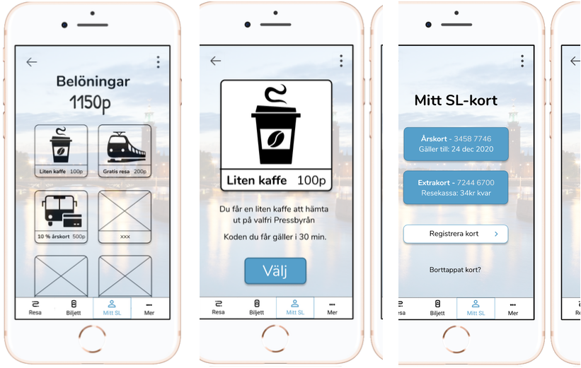
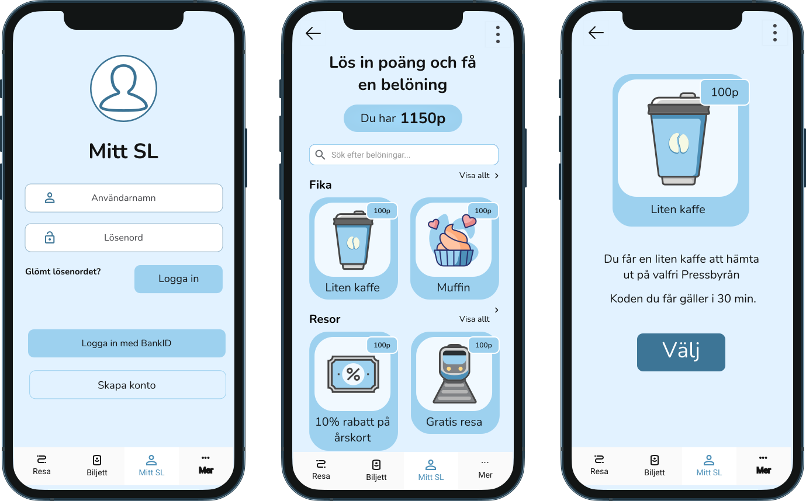

SL is the company that runs all land based public transport systems in Stockolm. I and my team focused on improving the SL app, partly through reworking the UI and by adding a points system to encourage more to use public transport.
TARGET GROUP
Our target group was quite broad - simply anyone who uses SL - and a challenge was therefore how to understand each user's needs.
We solved this by creating three types of user behavior to focus on. We came up with these three by making and releasing a survey, from which we took answers that we used to make an affinity diagram. With the affinity diagram, we could easily picture what kind of needs what kind of people had.
THE PROCESS
- Desktop research
- UX Review
- Survey
- Affinity Diagram
- User Types
- Sketches
- Site Map
- Flow Chart
- Wireframes
- Interactive prototype
- User Tests
- Improved prototype
THREE TYPES OF USERS
The everyday commuter
"I just want to get to work for as cheap as possible"
Characteristics:- Travels to school/work
- Uses public transport only because they don't have a car/better alternative
- Wants to get to work / school efficiently and for cheap.
- Wants to arrive on time.
- Make the person think about sustainability and choose SL over taxis, even on weekends.
The leisure rider
“If there's noisy people, I go for comfort and take an uber home."
Characteristics:- Travels home by taxi/uber after parties/dinners
- Wants to get home quickly and comfortably. Does not care about sustainability after drinking
- Get the person to use night transport instead of uber/taxi, and...
- Public transport to events
Environmentally conscious
"It's an easy and sustainable pick."
Characteristics:- Always travels with public transportation
- Wants to protect the environment while still being able to get around
- Get them to care about the new point system.
FINDING THE SOLUTION
When we thought about the app's new look, we individually made a couple of sketches. We selected our favourite sketches and redid them slightly for the app to get a uniform design.
THE SOLUTION
Our hypothesis is that with the help of our new function
"My SL" we will make people become more aware of their
footprints on the environment at the same time as are
rewarded for travelling sustainably. This would encourage
more people to use SL, and use SL *more*.
With the help of our version of the SL app, you can travel
in an environmentally friendly and sustainable way, and at
the same time collect points which give you rewards.
First prototype
It was the first time we used Figma (besides some testing) and we were all a little insecure but very willing to do our best. This led to some inconveniences, for example, the buttons on some pages were slightly transparent, something that worsened the readability.

We also changed SL's main colour to a more muted colour that is easier to look at.
Reworked prototype
This was my first project in Figma, so in early 2022 I decided to redo the prototype and make the UI more modern. I didn't change much other than the appearance, except for the categories in the "Rewards" (belöning) page.
User tests
The satisfaction when the prototype is complete...!
Before we were completely done though, we decided to user
test. Due to the pandemic, this was done remotely. Among
other things, we asked them to show how to perform certain
actions, and to tell us what they expected from each view
(eg what would happen if you pressed a button). The goal
was then to find out how they experienced the app and if
the new functions are satisfactory. The testers gave us
valuable feedback and helped us know what went well and
what should be further improved.
Conclusion
Among other things, this project has taught me how important it is to work agile, how wonderful Figma is, and how magical it is to see the puzzle pieces fall into place as you get closer to the end of the project. Not because the job is hard, but because it is so rewarding to be able to test the fully functional and interactive prototype. The user tests helped me train my interviewing skills and taught me how valuable it is to test people with different disabilites and of different age.